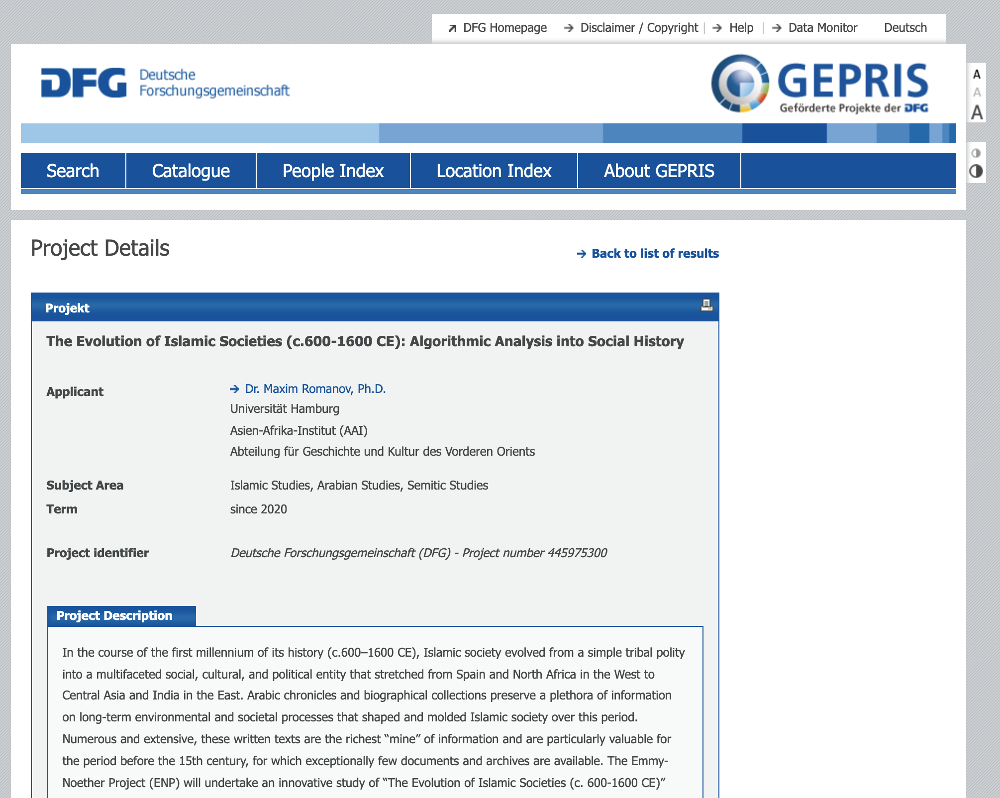
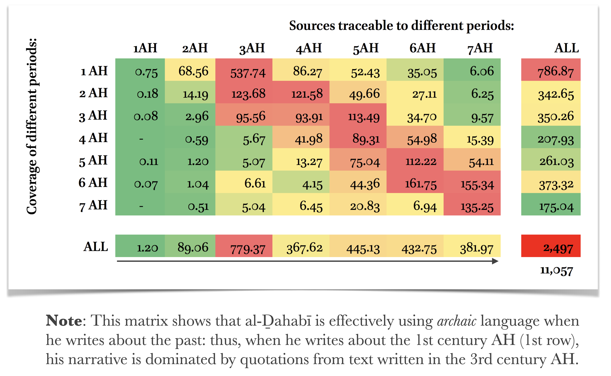

background-image: url(./images/bg_default_2021_eis.png) background-size: contain class: center, middle ## Modeling the Development of Premodern Islamic Societies through Computational Analysis of Written Sources ### *Evolution of Islamic Societies (c. 600–1600 CE):<br> Algorithmic Analysis into Social History* ⥈ **Dr. Maxim Romanov** Universität Hamburg ⥈ January 18, 2022 <br> <br> --- ### *funded by DFG within the Emmy Noether Programme*  --- # Why? .large[ - **Arabic written tradition is vast and understudied** - _c._ 40,000 titles (reported in the bibliography _Hadiyaŧ al-ʿārifīn_) - _c._ 1,000,000 manuscripts in Iran alone ([scripts.nlai.ir](https://scripts.nlai.ir/)) - *we do not really know how many have been published* - _c._ 6,400 titles (_c._ 1 billion tokens) have been digitized ([OpenITI](https://github.com/OpenITI/)) ] --- # Why? .large[ - **historical and biographical texts** (*chronicles* and *biographical collections*)<br><br> - *low hundreds?* - _c._ 300 texts digitized - _c._ 100,000,000 words - _c._ 500,000 biographical records ] ??? - The tradition is particularly rich in chronicles and biographical collections; - These texts are often truly extensive. (Ibn Asakir ±9mln; Dhahabi - 3.3 mln; 2.9 mln; Mizzi - 2.6 mln) - They preserve massive amounts of information on historical processes that shaped and molded Islamic societies. - They are crucial for our understanding of this chapter in the history of the humanity. - Their numbers run into low hundreds - For the project that I am proposing I have collected some 300 texts - - a corpus of 100 million words - - 485 thousand biographical records --- # Why? .large[ - **historical and biographical texts** (*chronicles* and *biographical collections*)<br><br> - **_Potentially:_**:<br> we have information to produce a robust model of the development of the Islamic world - **_So far, unfortunately:_**<br> “our blessing and our curse”<br>— as Wadād al-Qāḍī put it ] ??? - **Unfortunately**: the very volume of this information so far has been both “our blessing and our curse”, as a leading Arabist put it - so far, it has been a real methodological “bottleneck” for our field. --- # Methodological Solution <img src="./images/meth_sol.png" alt="Drawing" style="width: 800px;"/> ??? - My project offers a methodological solution that will allow us to study these sources holistically, and in an effective and reproducible manner. - At the heart of the project is a machine-readable corpus of Arabic texts and series of advanced computational methods of text analysis and data modeling. - I will be happy to give more details on the methods during the QA later - Together they are the key to discovering, evaluating, and modeling all relevant textual evidence at an unprecedented scale. --- class: center, middle # Chronology *&* Geography ## *corpus-driven and exploratory* --- background-image: url(./images/sources01.png ) background-size: contain class: center ## Chronology (*exploratory*) ??? The following graph shows how these 200+ texts with biographical information are distributed chronologically. Note: dates are in Islamic hijrī calendar; surrounded with red are texts written in the 11th century; to the right --- those that are written after --- background-image: url(./images/sources02.png ) background-size: contain class: center ## Chronology (*exploratory*) ??? The following graph shows how some 500,000 biographical records are distributed chronologically. Note: dates are in Islamic hijrī calendar; surrounded with red are biographies written in the 11th century (±55,000 biographies); to the right --- those that are written after (quite a significant part of those a biographies of individuals from the 11th century)** --- background-image: url(./images/geo1.png ) background-size: contain class: center ## Geography (*exploratory*) --- background-image: url(./images/geo2.png ) background-size: contain class: center ## Geography (*exploratory*) --- ## Approach to Textual Sources - the main focus is on *Minimal Units of Information*, e.g., descriptions of events from chronicles, and biographical records from biographical collections:<br><br> - *premise:* narratives are consciously constructed, while myriads of details scattered across vast texts simply cannot be subjected to the same level of agenda-driven editing; in large quantities, such agenda-resistant data is likely to provide more reliable historical evidence<br><br> - *MUI* will be aggregated into clusters of related historical information, which will be consequently studied<br><br> - Each primary source will be broken into such units and they all will be re-aggregated into *MasterChronicle*, which will serve as a unified research ecosystem for the project and its collaborators --- ## Research Methods .large[ - **first group:** text-mining methods for generating metadata layers that would allow grouping MUI into multiple clusters<br><br> - **second group:** modeling and analysis of extracted information<br><br> - **third group:** more traditional close-reading approaches to “important” clusters of information ] --- # Team .large[ - PI - Postdoc / with SC and Developer Skills / - 2 PhD Students (ads online) - <https://tinyurl.com/PhD01> - <https://tinyurl.com/PhD02> - Students Assistants ] --- ## Research Areas (PI) .large[ - **Social Structure and Mobility** (PI)<br><br> - Compositions of Islamic society (*élites*) - Major social transformations - Cultural Geography and Mobility Patterns ] --- ## Research Areas (PhD 1) .large[ - **Political Power and Conflict**<br><br> - Extent of political control - geographical and chronological dimensions - Patterns of interactions with local population ] --- ## Research Areas (PhD 2) .large[ - **Environmental Change and Disasters**<br><br> - Climate change, plagues, floods, droughts, etc. - geographical and chronological dimensions - Their effect on local populations ] --- background-image: url(./images/team1.png ) background-size: contain class: left ## Project --- background-image: url(./images/team2.png ) background-size: contain class: left ## Project: *Research Areas* --- background-image: url(./images/team3.png ) background-size: contain class: left ## Project --- # Broad Objectives .large[ - **PRI:** Historical-and-biographical - *Historical development of the Islamic world* <br><br> - **SEC:** Historiographical - *Understanding Historiographical tradition* - **SEC:** Methodological-and-educational - *Developing resources; Teaching; Building the field* ] --- # Broad Objectives .large[ - **SEC:** *Understanding Historiographical tradition*<br><br> 1. *Understanding “editions”* 2. *A Books and Its Sources* 3. *Pick and Choose* 4. *Scratch This, Add That* ] --- # Broad Objectives .large[ - **SEC:** *Methodological-and-educational* - *Developing resources* - MasterChronicle - A Longue Durée Atlas of Islam - Methodological Handbook - *Teaching* - Courses @ UHH - *Building the field* - A Workshop and Visits (10) ] --- background-image: url(./images/collaborations.png ) background-size: contain class: left ??? COLLABORATION --- class: center, middle ## Methodological Appendix --- class: center, middle #### [Exploratorium Demo](https://maximromanov.github.io/projects/exploratorium_demo/) #### [OpenITI NgramReader+](https://maximromanov.shinyapps.io/natharat/) #### [Althurayya Gazetteer *&* Model](https://althurayya.github.io/) --- ### Romanov, Maxim. 2017. “Algorithmic Analysis of Medieval Arabic Biographical Collections.” *Speculum* 92 (S1): S226–46. https://doi.org/10.1086/693970. <img src="./images/articleOnline.png" alt="Drawing" style="width: 800px;"/> --- class: center, middle # *Algorithhmic Analysis (A2)* ## Ismāʿīl Bāšā al-Baġdādī (d. 1339/1920) and his *Hadiyyaṯ al-ʿārifīn* (“The Gift to the Knowledgeable”) • **Data** • descriptive names (Ar. *nisbaŧ*) • places (toponyms) • dates • book titles • --- # *A2: Concept* <img src="./images/cycle.png" alt="Drawing" style="width: 800px;"/> --- # *A2: Text-Mining* <img src="./images/01.jpg" alt="Drawing" style="width: 800px;"/> --- # *A2: Text-Mining* <img src="./images/02.jpg" alt="Drawing" style="width: 800px;"/> --- # *A2: Text-Mining* <img src="./images/03.jpg" alt="Drawing" style="width: 800px;"/> --- # *A2: Text-Mining* <img src="./images/04.jpg" alt="Drawing" style="width: 800px;"/> --- # *A2: Authors & Books (dates)* <img src="./images/ha_authors.png" alt="Drawing" style="width: 700px;"/> <img src="./images/ha_books.png" alt="Drawing" style="width: 700px;"/> --- ## *A2: Regions (<https://althurayya.github.io/>)* <img src="./images/althurayya.png" alt="Drawing" style="width: 800px;"/> --- # *A2: Regions* <img src="./images/graph_bar.png" alt="Drawing" style="width: 800px;"/> --- # *A2: Regions Over Time* <img src="./images/rot_iraq.png" alt="Drawing" style="width: 800px;"/> <img src="./images/rot_iran.png" alt="Drawing" style="width: 800px;"/> --- # *A2: Regions Over Time* <img src="./images/rot_misr.png" alt="Drawing" style="width: 800px;"/> <img src="./images/rot_sham.png" alt="Drawing" style="width: 800px;"/> --- # *A2: Regions Over Time* <img src="./images/rot_andalus.png" alt="Drawing" style="width: 800px;"/> <img src="./images/rot_rum.png" alt="Drawing" style="width: 800px;"/> --- background-image: url(./images/map03.png) background-size: contain # *A2: Networks* --- background-image: url(./images/map04.png) background-size: contain # *A2: Networks* --- background-image: url(./images/HA_Connections1100-1200_Period100.png) background-size: contain # *A2: Cultural Connections* .footnote[The Iraqi-Iranian core in the twelfth century CE] --- background-image: url(./images/HA_Connections1200-1300_Period100.png) background-size: contain # *A2: Cultural Connections* .footnote[Massive migrations of the thirteenth century CE] --- background-image: url(./images/HA_Connections1400-1500_Period100.png) background-size: contain # *A2: Cultural Connections* .footnote[New Mamlūk core of the fourteenth and fifteenth centuries CE] --- background-image: url(./images/HA_Connections1500-1600_Period100.png) background-size: contain # *A2: Cultural Connections* .footnote[Reconfiguration of the sixteenth century CE] --- background-image: url(./images/HA_Connections1700-1800_Period100.png) background-size: contain # *A2: Cultural Connections* .footnote[The Turco-Arabic and Indo-Iranian cores in the eighteenth century] --- class: middle, center ## Historiographical Questions <hr> ### 1. Understanding “editions” ### 2. *A Books and Its Sources* ### 3. *Pick and Choose* ### 4. *Scratch This, Add That* --- background-image: url(./images/Dhahabi_Andalus_00.31.42.jpg) background-size: contain --- background-image: url(./images/Dhahabi_Andalus_00.31.49.jpg) background-size: contain --- background-image: url(./images/Dhahabi_Andalus_00.31.53.jpg) background-size: contain --- background-image: url(./images/Dhahabi_Andalus_00.31.58.jpg) background-size: contain --- background-image: url(./images/Dhahabi_Andalus_00.32.04.jpg) background-size: contain --- background-image: url(./images/Dhahabi_Andalus_00.32.08.jpg) background-size: contain --- background-image: url(./images/Dhahabi_Andalus_00.32.12.jpg) background-size: contain --- background-image: url(./images/Dhahabi_Andalus_00.32.19.jpg) background-size: contain --- background-image: url(./images/Dhahabi_Andalus_00.32.25.jpg) background-size: contain --- background-image: url(./images/Dhahabi_Andalus_00.32.29.jpg) background-size: contain --- background-image: url(./images/Dhahabi_Andalus_00.32.35.jpg) background-size: contain --- background-image: url(./images/Dhahabi_Andalus_00.32.38.jpg) background-size: contain --- background-image: url(./images/Dhahabi_Andalus_00.32.44.jpg) background-size: contain --- background-image: url(./images/Dhahabi_Andalus_00.32.50.jpg) background-size: contain --- background-image: url(./images/Dhahabi_Andalus_00.32.56.jpg) background-size: contain --- background-image: url(./images/Dhahabi_Andalus_00.33.09.jpg) background-size: contain --- background-image: url(./images/Dhahabi_Andalus_00.33.15.jpg) background-size: contain --- background-image: url(./images/Dhahabi_Andalus_00.33.19.jpg) background-size: contain --- background-image: url(./images/Dhahabi_Andalus_00.33.23.jpg) background-size: contain --- background-image: url(./images/bg_default_2021_white.png) background-size: contain class: middle, center # Other Methods for Generating Networks of Information ## 1. Similarity measures ## 2. Complex modeling --- # 1. Similarity measures .large[ .red[- *topic modeling*; - *text reuse detection*; - *stylometry*] - and many other methods that calculate distances of different kinds (*k-means clustering*, *hierarchical clustering*, *tf-idf*, etc.) ] --- ## Topic modeling - biographies of women in al-Ḏahabī’s *Taʾrīḫ al-islām* ??? Topic #20 in al-Dhahabi’s “History” is on biographies of women. The topic is identified through the following shared tokens, most of which include feminine words, verbs in feminine forms, female pronouns, and prepositional phrases with feminine pronominal suffixes: (1) “daughter”; (2) “mother”; (3) “from-her”, i.e., [transmitted religious knowledge] “from her”; (4) “Fatima”, a female name; (5) “[she]-died”; (6) “to-her”; (7) “and-she”; (8) “[she] transmitted”; (9) “and-[she]-was”; (10) “and-[she]-died”; (11) “and-Fatima”, a female name; ... (14) “from-her” [the knowledge was transmitted]; (15) “sister”; (16) “pious” — feminine form; (17) “Zaynab”, a female name; (18) “and-[she]-listened”, i.e., she studied [with someone]; … and so on. --- ## Text Reuse <img src="./images/tr_example01.png" alt="Drawing" style="width: 700px;"/> --- ## Text Reuse: *passim*.red.bold[\*] <img src="./images/tr_example02.png" alt="Drawing" style="width: 700px;"/> .footnote[.red.bold[\*]developed by David Smith, Northeastern University, USA] --- ## Text Reuse: *Taʾrīḫ al-islām* under X-Rays <img src="./images/ex01.png" alt="Drawing" style="width: 750px;"/> <img src="./images/ex02.png" alt="Drawing" style="width: 750px;"/> --- ## Text Reuse: *Taʾrīḫ al-islām* under X-Rays <img src="./images/ex03.png" alt="Drawing" style="width: 750px;"/> <img src="./images/ex04.png" alt="Drawing" style="width: 750px;"/> --- ## Text Reuse: *Taʾrīḫ al-islām* under X-Rays <img src="./images/ex05.png" alt="Drawing" style="width: 750px;"/> <img src="./images/ex06.png" alt="Drawing" style="width: 750px;"/> --- ## Text Reuse: *Taʾrīḫ al-islām* under X-Rays  --- ## Stylometry <img src="./images/bct_colleagues_test_Consensus_600-800_MFWs_Culled_10-50_Classic_Delta_C_0.5_001_AI.png" alt="Drawing" style="width: 400px;"/> .footnote[Eder, Maciej, Jan Rybicki, and Mike Kestemont. 2016-08. “Stylometry with R: A Package for Computational Text Analysis.” <i>The R Journal</i>, 8 (1): 107–121. <http://journal.r-project.org/archive/2016/RJ-2016-007/index.html>] --- background-image: url(./images/bct_colleagues_test_Consensus_600-800_MFWs_Culled_10-50_Classic_Delta_C_0.5_001_AI.png) background-size: contain --- background-image: url(./images/consensus_tree_hindawi_ai.png) background-size: contain --- background-image: url(./images/gephi_network_hindawi_ai.png) background-size: contain --- ## Rolling Stylometry <img src="./images/rs01.png" alt="Drawing" style="width: 700px;"/> .footnote[Eder, Maciej. “Rolling Stylometry.” *Digital Scholarship in the Humanities* 31, no. 3 (September 1, 2016): 457–69. <https://doi.org/10.1093/llc/fqv010>. ] --- background-image: url(./images/rolling_stylometry.png) background-size: contain exclude: true --- background-image: url(./images/rs03.png) background-size: contain --- class: english exclude: false # 3.2 Modeling .large[ - text reuse network (SNA) - algorithmic analysis: - text-mining - social geography (SNA) - cultural production ] --- class: center, middle ## Arabic Written Tradition Through Text Reuse --- background-image: url(./images/02.jpg) background-size: contain exclude: true --- background-image: url(./images/03.jpg) background-size: contain --- background-image: url(./images/04.jpg) background-size: contain --- background-image: url(./images/05.jpg) background-size: contain --- background-image: url(./images/06.jpg) background-size: contain --- class: center, middle # Some Extra - [OpenITI NgramReader+](https://maximromanov.shinyapps.io/natharat/) - [Althurayya Gazetteer *&* Model](https://althurayya.github.io/) background-image: url(./images/06.jpg) background-size: contain